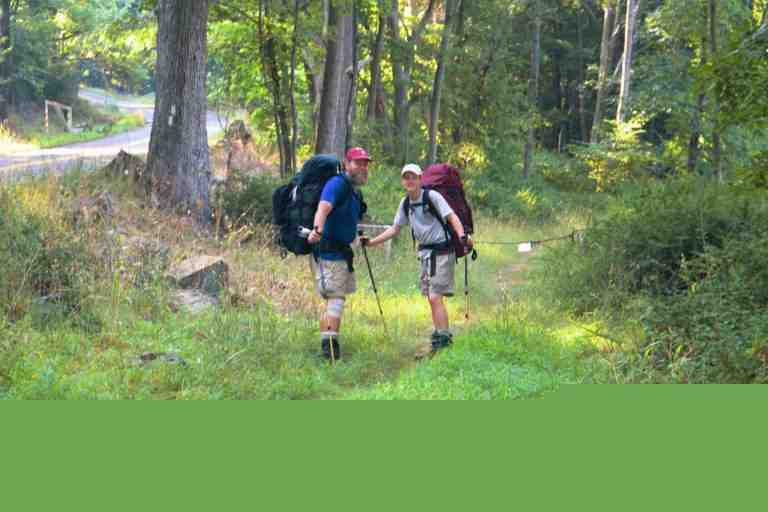
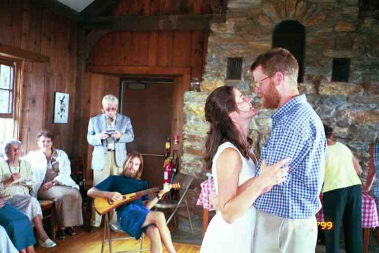

We left the town of Delaware Water Gap and the state of Pennsylvania on Friday July 9, crossing the bridge on I 80 over the Delaware River into New Jersey. As we entered our 8th state, our total mileage was 1269, meaning we had about 900 to go. We had spent two days resting in Delaware Water Gap where I got boot inserts and stretching instructions to help with my foot problem.
Across the bridge we came to a highway rest stop (Delaware Water Gap National Recreation Area Information Center) with a long row of porta potties outside. The Center made me think about the differences between our trip and the trips of most of the population. I also wondered what New Jersey had in store for us, as my view of the state was of large sprawling urban areas. I wondered about the territory in our 73 mile hike through the state.
We walked to an interstate underpass and proceeded into Worthington State Forest where we immediately started climbing along Dunnfield Creek. It was good to be under the trees during the continuing heat wave but the 1000 foot climb was a bit of a strain after the two days off. At the 4 mile mark the trail levelled off and the rest of the day was mostly flat. We contoured Sunfish Pond, the southern most glacial pond on the trail, and met a number of day hikers and a few weekenders who were swimming.
The trail was rock strewn and along the shore it consisted mostly of small boulders. We saw a deer and mentioned it to a group of young people we met. One boy of about thirteen was not impressed, informing us of a rattlesnake that he had to kill with a rock that morning. I told him that we had seen many and that there was likely no need to kill them. But of course their snake had been a lot more dangerous than the ones we had seen.
Late in the afternoon we walked with TITANIC and SPUD to Mohican Road and then walked 0.2 miles to the Mohican Outdoor Center operated by the Appalachian Mountain Club (the club that is responsible for the trail and huts in the White Mountains and most of New Hampshire). Among other things, the Center holds year round outdoor survival courses. We went to the main building and purchased pop from the fridge. We could have paid for a bunk and shower but we decided to stay at one of the free tent sites. T-ROY was here and did a work-to-stay by which he got a free bed. SINGLEMALT came through a few days later and bunked with some weekenders and tells of having a wonderful meal and liquid refreshments.
There is a lake on the property so we walked on down and I went swimming and was soon joined by SPUDS. I made the mistake of not removing the new bandanna that I had received in the mail. It is designed keep you cool in hot weather. It contains crystals which turn to gel when immersed in water. The bandanna was dry but it soaked up the water as I started to swim and it got tighter around my neck as the crystals changed to gel. I had to hurry back to shore to remove it before I choked.
We had supper at a picnic table at the campsite with SPUDS and TITANIC (for some reason he did not eat). We started with ramen noodles and summer sausage and then had a Lipton noodle mix. We were soon joined in the tenting area by CABOOSE, PALE RIDER, and DR RAGAMUFFIN and his wife ROSEYCHEEKS. As per usual we set up our tent without the fly because of the heat. In the middle of the night we were woken by rain. We got up quickly, took the fly out of MA's pack and fumbled around trying to attach it to the tent in the dark. A very frustrating few minutes making sure the fly was right side up and trying to match the corners of the fly with the correct corners of the tent. From that night on, we still slept without the fly but we attached it to one end of the tent so it would be easy to install in the event of rain.
The next morning was our daughter Natasha's birthday, so we called her from the pay phone in front of the main building before leaving. We took a break with T-ROY at the Catfish Fire Tower where we got a great view of the valley below. I told him that the repairs he made to my backpack were holding up and that it felt a lot more comfortable than before. The rest of the day the trail continued level and the map shows that we were walking along the ridgeline of Kittatinny Mountain. It was still very hot and humid and the terrain was covered with rocks. Just because Pennsylvania is renown for its rocks, it does not mean they stop at the border.
After every break I would do up to 5 minutes of the stretching exercises that DR RAGAMUFFIN had shown me. I could feel pain in the arch of my feet as I did them but I knew they were having an effect as walking was a lot less painful. Another thing I did to help stretch, was to try to walk on my toes as I walked uphill.
Late in the day as we came into a little meadow, MA spotted a bear walking on all fours in the long grass in an area about 30 yards ahead and above us to the left, apparently eating blueberries. I knew that we did not want to surprise it, so I banged my hiking poles together and it immediately stood up on its hind legs. Boy are they tall. Immediately a cub with her climbed a tree, but mama had other plans and took off over the slight rise into the woods. The cub quickly descended the tree and went after her.
Within an hour we came to a wide side trail leading about 0.2 miles to Brink Road shelter where we saw a bear and cub leaving, possibly the same ones. A number of us camped here or stayed in the shelter: SPUDS, PALE RIDER, CABOOSE, TITANIC, ROSEYCHEEKS and DR RAGAMUFFIN . When I went a short distance behind the shelter to filter water, I soaked my feet in the cold water source as per instructions from the physiotherapist.
***********
Much of the conversation that evening was bear related. New Jersey does not allow bear hunting so the population is healthy and is generally unafraid of humans. Bears are known to hang around shelters in the hope of getting food. It is recommended to bang pots and pans and make other loud noises to scare them. However, some claim that banging pots in New Jersey is a call to supper for the bears. One of their tricks is to "bluff charge" which consists of charging hikers in the hope that they will drop their bags, thus providing food for the bears. This site had a large metal bear box which was closed shut by a chain and in which we all stored our food.
**********
The privy was in the woods up a little rise across the trail. It consisted of a wooden box with a toilet seat, in other words an outhouse without the house. From this perch we could see and hear a group of weekend hikers who were camped in a field nearby. We had to assume they could not see us through the trees.
This brings me to a topic that I have not covered yet: TP or Toilet Paper. Thru hikers usually carry TP within easy access in a small plastic bag to keep it dry. (A few days later I forgot to place my TP in a bag and had to borrow some from PADDLER when I was in a hurry and my supply was wet.) Thru hikers are very honest and trustworthy but we all "borrow" TP from hotel rooms or restaurants. This is because it is usually sold in packages of 4 or more whereas we require less than one roll. When we borrow TP we try to take a roll that is half finished and we remove the cardboard center to reduce the weight and bulk. Without going into too much detail, most hikers seemed to agree that we used less TP on the trail, maybe because of diet or because of the squatting position in the woods. We were always aware of the amount remaining and tried to conserve. In a pinch, hikers could use plants or moss. WYOMING SKATEBOARDER would collect moss all day which dried in his pocket. He did not carry TP for at least a portion of the trip.
**************
The next day was again in a straight line and mostly level as we continued along the ridge line. In the morning we saw a couple of lakes in the distance to our right; by all appearances, this seemed to be cottage country. The one major dip in the trail was late in the morning when we went down to US 206 where the trail came out next to Worthington Bakery in Culvers Gap. The bakery is situated right on the highway with a dirt parking area out front and a narrow concrete sidewalk running along the front of the building. We leaned our packs against of the front of the store, on the sidewalk, and went inside.
We stood in line with other hikers and with other patrons, some of whom seemed to be on their way from Sunday services. In line, I became well aware of my smell and how I looked, with my dirty damp sweaty clothes. I bought a number of items for the two of us including turnovers and danishes which they placed on paper plates for us. The entire gang from the previous night was here sprawled on the sidewalk leaning back against the building with feet stretched out, enjoying their sweet treats. Most of us went back inside for seconds.
As we sat there, a continuing parade of vehicles pulled up to the sidewalk and customers made their way past us to the door. I always wondered what went through their minds as they saw us and perhaps got a whiff of us. There was a water spigot against the side of the building for use by hikers but there were no toilet facilities. DR RAGAMUFFIN had to dig into his pack for his TP bag and run across the road into the woods.
This would be the last time we would see SPUDS, CABOOSE and PALE RIDER on the trail. We had first met CABOOSE on April 19 and SPUDS on May 3. Of course, we did not know it was our last time together, but such is the trail.
The remainder of the day was uneventful with the exception of a pavilion that the trail went through on the top of Sunrise Mountain, which was accessible by road. PADDLER had been through before us that day and had castigated some young people carving their names in the posts. After a 12.5 mile day, we finally came to our destination, Mashipacong shelter, where we met GRACE'S SON and PADDLER with his son SPOTTED BEAR who were all taking a break before proceeding on. We would not see GRACE'S SON again on the trail. We were soon joined by DR RAGAMUFFIN and his wife ROSEYCHEEKS who would be spending the night. I used the privy but it was not very pleasant as it was almost full.
It had been another hot day and we were low on water. The Data Book indicated that there was water at the road 0.2 miles away. SPOTTED BEAR went to obtain some and returned with a couple of jugs that a trail angel had left at the road. He said the water source was dry and that a few boy scouts were at the road drinking and wasting the jugs of water that had been left. DR RAGAMUFFIN, who was renown for his temper, left to give them a piece of his mind. He apparently gave them a speech about long distance hikers needing water and about wasting that resource. I don't know if it had any effect but a few minutes later, they sheepishly walked past the shelter on their way to the woods with their full packs.
The four of us had a pleasant evening relaxing, reading and talking. They were a young couple from Nashville TN and we are a middle aged couple from Canada so the conversations were very interesting and diverse. DR RAGAMUFFIN is an outspoken young Republican with what I consider to be ultra conservative ideas whereas my ideas are on the other side of the spectrum. I also recall that we did not share the same point of view on disciplining of children. All in all, it was a very enlightening sharing of ideas.
The next day we were on the go almost from sunup to sundown. We hiked 19.6 miles of trail and also did a few extra miles and had a couple of long breaks. At the 5.5 mile mark we came to the office of the High Point State Park. We obtained water, made phone calls and obtained a map of the park to help us stay on the trail through the park and also locate the swimming area and concession stand. High Point Monument is located in the park and marks the highest point in New Jersey (1803 feet above sea level).
We followed the trail through woods for about a mile until we could see Lake Marcia through the trees and then bushwhacked our way down to the road and backtracked down the road to the beach and concession stands. We sat and relaxed on the large deck of the beach pavilion overlooking the lake, and then went over to the concession where we decided to order the rather pricey cheeseburger platters. We heard someone in the back put the burgers on the grill and my mouth started watering. But it did not last long. I had to pay when I placed the order and all I had was travellers cheques, as we had just run out of cash. The student staff was unsure if they could accept them and suggested we go cash them at the main office. As it was a mile away on foot it was out of the question, so we had to cancel the order. What a major disappointment. We had to settle for some of our own supplies: pop tarts, candy bars and trail mix. We likely spent two hours relaxing here including a swim fully clothed in the lake to cool off. We both took showers, also including our clothes in order to remove some of the odour. We called the Apple Valley Inn that was a few days away in Glenwood NJ (recommended by southbounder ARAGORN) but we found the rates too expensive.
As we left the park, the trail descended slowly off the mountain, made a 90 degree turn and began to parallel the NJ/NY border sometimes hugging the border and sometimes crossing for short distances into New York. During the afternoon we crossed 8 roads, finally coming off the trail at the Lott road which lead us 0.4 miles into Unionville, NY. We left our bags on the small veranda of the Side Road Kitchen and joined ROSEYCHEEKS, DR RAGAMUFFIN and TITANIC for supper. The restaurant deserved its name both in its look and menu. It was situated in a small house and there were only a few small tables in what was likely the former dining area. The menu consisted of home made soups and such things as meat loaf. When ordering a full meal, every item came in its own little bowl.
We paid with a travellers cheque in order to get some cash in our change and also made two trips to the small grocery store across the street to buy small items and thus obtain more cash. After replenishing our water supply at the spigot at the Post Office we left town. It was now around 6:30 and we still had nearly 6 miles of trail to the shelter.
The evening walking was fairly easy. At one of the next road crossings, we came across a couple of young men with a van. They were scouting things out for an expedition that they would be guiding over the next few days with a group of teenagers. They were excited at meeting us and wanted to offer us something. They finally opened a 48 ounce can of pineapple juice and we both took big long drinks right out of the cans. I think we made their day. We eventually had a half mile road walk in order to cross the bridge over the Walkill river. The trail then went on an old road which contoured a marsh in straight lines so that we almost made a rectangle through this area.
We finally came to two blazes indicating that the trail was turning into the woods. The terrain was marshy and we walked for nearly half a mile on a wooden walkway consisting of two 2 by 10 boards nailed to cross beams and laid on the ground. We crossed another road and climbed up Pochuck Mountain to Pochuck Mountain shelter. DR RAGAMUFFIN AND ROSEYCHEEKS were already in their tents next to the shelter trail when we got there and TITANIC was also tenting. We spent the night in the shelter with PADDLER and SPOTTED BEAR. There was no water at this shelter but we did not need any for cooking and we had obtained enough at Unionville to get us through part of the following day.
It was getting dark when we arrived, which was a late arrival for us, but of course we had already had supper so we soon were ready for the night. However, it had been a long day. We caught glimpses of a beautiful red sunset through the trees from the front of the shelter and DR RAGAMUFFIN ran up excitedly to ask if we had seen it. Just before settling in for the night I went out in search of the privy in the dark and nearly got lost but was put back on track by DR RAGAMUFFIN who yelled at me from his tent.
The first 4 miles the next day were through woods and fields as we came over and down Pochuck Mountain. We then had a long hot 2.6 mile road walk which was very close to walking three sides of a square. We first went west on County Road 517, watching for traffic as there were no sidewalks. This area is identified in our documentation as Glenwood NJ. This section of the road is obviously a residential area, lined with homes and with no businesses or opportunity to go to the toilet. We followed blazes that were placed on telephone poles along the road. After some time we came to a small beach right on the road. It was surrounded by a high chain link fence and over the entrance gate was a sign saying members only. We were told by some hikers that this was a typical New Jersey thing.
The trail then took another street to the north, crossed a river and then took a street heading west. We stopped at this last corner and had our break sitting on someone's low stone wall. Part way down this last street, we turned north into tree lined fields. Our maps show that the roadwalk will soon be gone as they are building a wooden walkway over a marsh and a footbridge over the river on land that the ATC has acquired. At the entrance to the fields, we went past ROSEYCHEEKS and DR RAGAMUFFIN for the last time.
***********
JILEBI describes the terrain from this morning and the previous evening much better than I:
http://trailplace.com/c99journals/315james/315james_index.html
**There were many bog bridges or puncheons to cross today as the trail went through Vermie swamp and some low lying areas. Because of the recent lack of rain these areas were not particularly wet. My favorite part of the trail today was when we walked around a large marsh in the Walikill Valley. This area used to be an old sod farm and is covered today with marsh and transitional vegetation. The red and black raspberries were ripe in profusion much to our delight. Monarch butterflies (our first sighting of them) hovered over milk weed flowers, Queen Anne's Lace (as big as saucers) and Ox-eyed Daisies looking like orange stained glass ornaments. In the distance the vegetation was pale lavender hued with a type of thistle. Pochuck Mountain was the biggest climb for today (700 feet) and then it was back to a warm road walk on Rte. 517**
***********
The trail went through fields for about a mile and then crossed NJ 94. We wanted to get to Vernon NJ, 2.5 miles down the highway to the east, where there was a new church hostel which we had seen announced on a few posters along the trail. The only thing we could see at the road crossing was the Heaven Hill Farm store 0.1 miles to our left. The highway was very narrow and I thought it would be easier to hitch a ride in front of the store. I also knew that the store was a bakery, which was very tempting.
In the parking lot, MA surveyed the few vehicles parked out front and said something about getting a ride. I dropped my bag out front and went inside to check out the goodies. I grabbed a couple of bottles of pop and was eyeing the pastries when MA came in and said she found us a ride. I reluctantly left the store and she introduced me to a man with a small pickup truck who had agreed to drive us to Vernon. She got in the truck with him and I got in the truck bed under the low cap with the bags.
It was extremely hot inside and the cap was closed. I was glad to have my pop. MA on the other hand was having a great conversation with her new friend. We arrived at a traffic light in town and MA yells at me, asking for directions. I could hardly hear her. Fortunately I recalled the name of the church and the directions to get there, and I pointed to the right. A block later I yelled at them to stop and we got out in front of Saint Thomas Episcopal Church.
On our walk around to the back of the church, MA explained that she did not think we would have much luck with our thumbs so she had simply approached the man in front of the store and asked if he was going to Vernon. He said that he had never been there but would be glad to drive her (or was it us). That is why neither of them knew where to go once we got to town. I guess we were developing all kinds of skills.
************
Apparently hikers had been able to sleep in the fire house or tent outside for a number of years, and at one time there were plans for the fire department volunteers to build a lean-to behind the firehouse. This had all changed now that this congregation had opened a hostel in the basement of their new church.
From the back parking lot there were stairs leading down towards the basement. There were a number of wide doors leading into the basement with a large patio area with tables and benches in front of the doors. The doors faced north and it was cool inside when we entered the large carpeted room. A couple of hikers sat in the far corner to the left in front of a TV set (with cable WOW) surrounded by their stuff. There were a few sleeping pads and bags set up next to backpacks along the walls. To our right there were a number of tables and chairs and beyond that we could see a large kitchen through an open counter. There were two fridges, one for use by hikers.
A door lead to a laundry/shower room which contained shelves full of soap, shampoo and laundry detergent donated by the congregation. There was no charge for staying here but a donation was requested and there was a suggested donation for using the washer and dryer. Two large washrooms were situated off a hallway on the far side of the room. Everything was spotless and new.
We were really impressed with this place and we talked to members of the congregation who dropped by during our stay. Every week one person was assigned responsibility for the hostel and would drop by a number of times to help out. When the church was being built a year or two ago, the congregation decided that one of their missions would be to serve the hiking community and they designed the basement and its entrance with that in mind. They consulted with Pastor Karen at the Church of the Mountain in Delaware Water Gap with regard to hikers' needs, possible problems, etc.
There was a locked chest with supplies obtained at Campmore (a church member worked at the nearby store) and which were sold at cost. It did not contain food but had items that had been suggested by hikers, such as hiking socks, boot liners, bandages, moleskin, sunscreen, batteries, etc. There was also a hiker box with items left by other hikers. The kitchen stove was available to hikers or they could cook on their own stoves outside.
It was early afternoon when we arrived and we walked over to the Burger King for lunch. That evening we went to an Italian restaurant with PADDLER and SPOTTED BEAR where we met a few other hikers that we did not know. TITANIC was in town staying a couple of days at a motel and SKINNY was at the hostel.
It was July 13 and we wanted to get to HOLLY and DOOLEY's wedding on July 17 at Mount Greylocks MA, a further 200 miles up the trail. I made a few calls from the hiker phone in the hostel and was able to arrange for a car rental in Munro NY. We would be crossing NY 17 a few miles from there in a couple of days. They agreed to come and pick us up when I would call.
The next day we had breakfast at Burger King with PADDLER and SPOTTED BEAR, and then caught a ride back to the trail in front of the restaurant. The young man went back to get the other two when he dropped us off, but they soon arrived in another vehicle. The terrain over the next two days was characterized by dark humid woods, dry rocky stream beds, short steep climbs up rocks and boulders, and finally a walk along the top of a long string of exposed boulders giving us a view of Greenwood Lake below us. The humidity created a haze that impeded our view in the distance. On a clear day New York City could be seen as described by JILEBI, who was 4 days ahead of us at this point.
****************
http://trailplace.com/c99journals/315james/315james_index.html
**MOMBASHA HIGH POINT (milepoint 1,356.4). We are sleeping on a slab of puddingstone at this ridgetop opening. To the southeast past undulating forested ridges we can see New York City skyscrapers sparkling in red, yellow, and white lights. We crossed the NJ/NY line today and walked on glacially smoothed undulating vertically oriented slabs of rock. The rock, a dark maroon sandstone studded with white quartzite pebbles and criss-crossed with stark white quartz veins was stunning. I managed to fall off one of these ledges and luckily my pack broke my fall and my ankle did not twist too much. We could see the tops of the World Trade Center from Prospect Rock poking out from the far away ridges. It was amazing to think that there was this protected land so close to this city. Below us in Greenwood lake motor boats swarmed leaving white wakes behind. The ridgetop vegetation mostly consists of scrubby scrub oaks, black cherry and the ubiquitous low and high bush blueberry and huckleberry bushes. I still stop periodically to pick handfuls of blueberries. We ate dinner at Wildcat shelter where the spring flow had slowed to a trickle. We passed Fitzgerald Falls which was a bone dry pile of rocks. I like our late evening hikes because at this time the Wood Thrush's and Veery's fill the air with their calls. Tonight, for once, I can see the stars as I fall asleep - the big dipper arcs above me, still bright enough to see even with the light pollution.**
*************
When MA and I got back on the trail after leaving Vernon, the day started with a steep 1000 foot climb over a distance of 0.5 miles and then levelled off with only a few large dips over the next two days. That morning we were looking for the Warwick Turnpike because the L & L Farm was only 0.2 miles down that road. We crossed a few roads before coming to what should have been the correct road, but this winding country road did not fit my view of a turnpike.
A query to the driver of a fuel truck parked nearby confirmed we were at the right place. A short walk brought us to the concession stand at the farm where we had a hot dog, sundae and pop. We filled our water bags from their tap. We were joined by PADDLER and SPOTTED BEAR who had also been confused and had gone passed the road. They stashed their packs in the woods and came back here. Like many such places in NJ and NY, there were no toilets, which made me uncomfortable and a little unwilling to eat or drink as much as I would have liked.
We did 17.6 hot miles this day and stopped just before dark at Wildcat shelter. The shelter was 0.3 miles down a side trail which circled around the hill on which the shelter was located. We shared the shelter with PADDLER and SPOTTED BEAR. SPUDS had set up his tent nearby. I went back down the trail to get water at a water source we had passed. We were lucky to have water because many shelters in this area do not have any. We all sat at the edge of the shelter in the fading light making supper.
PADDLER showed us how they prepared their meals on a small alcohol stove which he considered better than the white gas stoves most of us carried. It was basically a cup in which the fuel was burned, had no moving parts and did not require any effort. He brought his water to a boil, added a package of noodles and then removed the pot from the stove and placed a cosy over the pot. The cosy had been made by his mother-in-law. It was the exact same size as the pot and was made of a foam insulating material. It fit completely over the pot and kept the heat inside thus eliminating the need to simmer as per the package instructions. When the meal was ready to eat, he would take the cosy off the pan, turn it upside down and place the pot in the cosy. This allowed him to hold the pot in his hand as he ate out of it. His son SPOTTED BEAR had a similar set-up for his pot.
After cleaning up in the dark, MA and I headed towards the privy behind and to the left of the shelter. We ended up in the general area but could not locate the privy with our fading flashlights. We did our business in the woods and headed back towards the shelter. We became disoriented and could not find it. We called out and PADDLER turned on his light to let us see the location. PADDLER also went in search of the privy. A little later we heard SPUDS yell : "PADDLER you just stepped on my tent".
The next day was Thursday the 15th, the day we were to get the car. We would have it until Monday morning when we would get back on the trail. I was worried about how I was going to get to a phone to call for the car. It was a scorching morning as we hiked the 10 miles to US 17. We were parched as we came down the steep descent to the road around 11 a.m. The trail crossed the road and proceeded down a side road. This was a heavily wooded area without a building in sight. However at this intersection was a pay phone, right there on the corner in the middle of nowhere. I made my call and we were soon joined by PADDLER and SPOTTED BEAR. We would be driving them to get new boots for SPOTTED BEAR at the Campmore store which was nearby.
The car showed up and I was driven to Munro to fill in the necessary paperwork while the other three waited on the corner. I brought them bottles of pop when I returned and we went and got rooms at the Tuxedo Motel, the first place we had ever seen where the desk clerk was behind bullet proof glass. After showering we drove to Campmore where I got new boots and gaiters. PADDLER treated us to supper at East Side Marios. It was really strange to be driving for the first time in 4 months. I did not seem to have the ability to concentrate and keep us in the correct lane and I was driving considerably under the speed limit.
After a restaurant breakfast the next morning, we drove the other two back to the trail. (See attached picture). Someone had been leaving jugs of water both where the trail left the woods and where it went back in. All the jugs were empty, so we brought them back to the room to fill. When I returned them, I met WILD CHICAGO who had just arrived at US 17. Before going to the wedding we did more trail magic, giving a ride to a south bound couple in search of an ATM, and I got a haircut.

We drove to the wedding staying at a motel in North Adams and then driving up Mount Greylocks on Saturday. The first person we met on the summit was KAYBEK who we had not seen since the end of March in the snow storm. We then proceeded to meet the 25 or more hikers who had come to the wedding. Some like us had driven here, and others were actually at this exact spot in their hike (in some cases having slowed down over the last few days). We met many friends that we had not seen in a long time.
It was a hot sunny day, a perfect day for a wedding on the highest spot in Massachusetts. The wedding guests consisted of friends and family, who were all well dressed, and the hikers in their shorts and hiking boots or sandals. DOOLEY was wearing new hiking boots that he was breaking in. After the ceremony on the grass at the edge of the mountain, everyone went inside the lodge for a light buffet. INDIANA, whom we had not seen in a month, had his backpacking guitar with him and played a waltz for HOLLY and DOOLEY (see attached picture) and for HOLLY and her father. This day was definitely one of the highlights of our trip. There is access to 10 more wedding pictures on this linked page. Scroll down to July 17

After the wedding we drove GREENFOOT back down to his motel but on the way we stopped where the trail crossed the road, and walked to a shelter near the road to leave a note in the register for MOM, SMOKEY JOE and other hikers who were ahead of us but who had not arrived at this point yet. We would not be arriving here on our hike for another 17 days. On Sunday we drove back to New York and the next day we got back on the trail.